京张共檐：一条由公共生活组织的AI创新带
以保留为始、以缝合为形、以具名人工负责的AI为制度；在11.4平方公里概念总体框架内，以五缝、三类公共试验、两项完整旗舰和可重放、可停止的服务员状态协议，形成可审查的城市更新提案。
京张共檐：一条由公共生活组织的AI创新带
设计依据与资料清单
V6.1把“京张共檐”从一个概念口号推进为一套可被看见、使用和停止的公共基础设施：北端清河以基准花园公开树木—雨水—养护关系，中段AI原点以共享檐提供全天候学习、修理、照护与人工帮助，南端大钟寺以四角客厅处理站城到达、等待与夜间求助。它们不以炫技地标竞争，而以“少淋雨、少绕路、有人可问、能停下来”的日常完成度定义AI创新。来源 来源
V6.1把近期公开提出的“人机共融实验场”、五分钟生活与可体验公共AI场景转译成一条更严格的设计命题：AI只能帮助人把公共空间切换到合适的服务状态，不能替代人、控制道路或把居民变成数据。共享檐与四角客厅由此成为有低技术基线的“天气—照护—到达”公共房间，而不是科技展示橱窗。来源
这不是从零开始的公园想象。最新公开报道将九公里遗址公园描述为服务近70个社区、约45万居民、十余所高校和40余家科研机构的全龄公共走廊；这些数值只说明走廊级民生与知识密度，不能替代本方案临时范围的人口、客流或需求计算。因而V6.1优先把可停留、可绕行、可照护、可人工解释的公共界面做实，而不是把既有日常误写成未来AI展示。来源
地方依据也决定了形式：海淀公共规划强调减量集约、科技人文生态融合与无界首层。来源 来源
校城共享、全龄服务和人机友好使公共界面成为更新的先决条件；近期获批街区控规所述“一带一轴、两心多点”只作为区域协同背景，不替换征集边界或法定指标。来源 来源
项目边界和三处重点区仍是临时约束范围，只用于概念生成、面积复算和自检；共享檐与四角客厅只确定空间类型和运营逻辑，不指认权属地块、道路工程、文保改造或已批准选址。来源 空间数据 深度


V6.1概念氛围图只用来说明“低技、可停留、可维护”的公共空间意图；它不是现场照片、批准效果、测绘落位、工程尺寸或公众意见证据。生成方法与权利边界见版权说明。


两张V6.1原创生成式概念图只检验人的尺度、材料、雨天使用和地面连续性，不是现状、效果审批、测绘落位、交通工程或绩效证据。
本案仍遵守三层证据纪律：公开政府咨询和正式反馈为A类，经同意的现场走读、访谈与共创为B类，Agent旅程为C类待验证假设；C类绝不被写成居民同意或公众接受率。来源 来源
本项目也不是几个公共装置的征集，而是43.6平方公里产业与未来城市研究、11.4平方公里总体城市设计、368.4公顷三处重点区详细设计的嵌套任务。来源 深度
政策用于确认城市职能和公共问题，区级统计只提供背景；二者都不能替代场地人口、客流、权属、工程与公众参与资料。来源 来源 来源
现有研究矩阵包含13篇论文，其中11篇完成全文、完整稿件、全文网页或逐页可视审阅，2篇仍只作摘要筛选。指标
一期论文核实约2.4公里、16.8公顷和2023开放状态，因此“三道一绿”、东西缝合、铁路展示和专业运营是既有底盘，不被包装为Agent原创。来源
北京热环境论文只提供待复测变量，不构成热舒适绩效承诺。来源 来源
地铁论文要求四角客厅逐出入口象限记录真实路线，六站样本平均8分钟仅作比较而非服务标准；两项老年研究共同要求客观审计、主观感知、住房社区分层，并主动纳入行动不便者。来源 来源 来源
知识空间和中关村研究修正公共渗透性与吸收能力。来源 来源
生活实验室与智慧城市研究补齐责任、长期公共价值和设备透明度。来源 来源 来源
两篇绿地综述把公共气候脊修正为全生命周期社会生态基础设施：同时考察物种、季节、树木存活、维护、灌溉、公平与公众监测；叙述性综述和计数不一致均被记录为限制。论文不作权威装饰：任何现场结果与假设冲突，都应修改或撤回设计并重算指标。来源 来源
三层范围工作框架
统筹研究范围回答“海淀的AI优势如何成为公共价值”；总体设计范围回答“九公里遗址公园如何从纵向绿带变成纵横连通的公共房间”；三处重点区回答“怎样把概念做成可画、可测、可运营的原型”。来源 深度
近期公开的约37平方公里综合语境和1668.2公顷获批街区控规提示了更大的区域协同，但不替换任务书明确的43.6/11.4平方公里与三处重点区工作尺度。来源 空间数据
正式边界到位后，所有图层、比例、图纸和指标必须整包重算；每条引用还须按来源、尺度、许可、哈希与失效条件复核，不能在证据失效后沿用旧结论。空间数据
“京张共檐”不是沿九公里连续盖顶，而是一套共同空间语法：每个关键节点至少能够停留、避雨或遮荫、坐靠、饮水、找到厕所、停自行车、获得人工帮助，并为行动不便者保留连续地面。这些基本服务比屏幕和机器人更优先。空间数据 深度

总体结构由一条公共气候脊、五条横向城市缝、三个创新街区、两翼要素回路和十个更新工作包组成。公共气候脊把遗产、慢行、生态和日常服务叠合；五条城市缝以清河、小月河、校城与轨道接口为公共联系目标；三区分别承担全栈治理、策源转化和智能原生城市经济；两翼让专业服务与真实场景公测形成闭环。国际铁路遗产再利用案例提示，线性公共性来自多入口、连续公共房间和长期运营，不来自把全线做成同一景观皮肤。指标 指标 来源
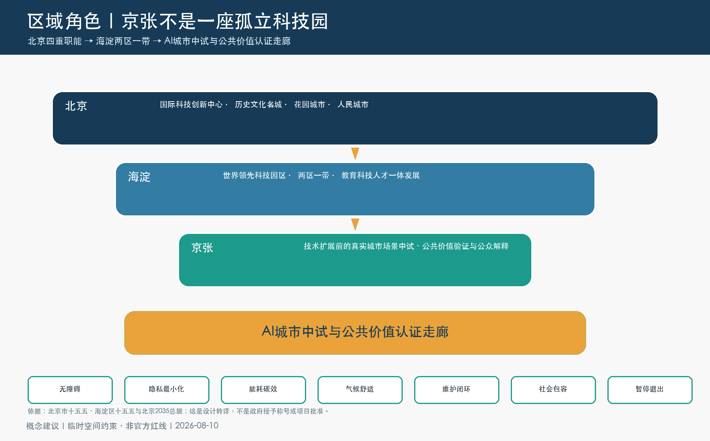
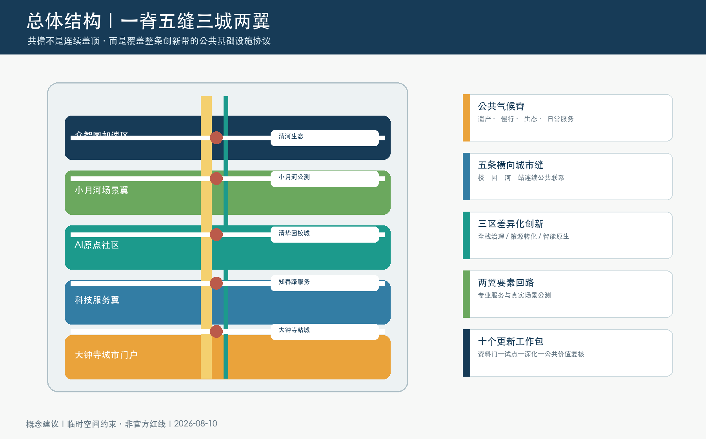
京张在更大格局中承担“AI城市中试与公共价值认证走廊”的概念角色：北京层面叠合国际科技创新中心、历史文化名城、花园城市和人民城市的要求；海淀层面在“两区一带”中承担南北联动、成果转译、真实场景验证和公众解释；场地层面，任何AI在扩展前都必须经过无障碍、隐私最小化、能耗、气候、维护、包容和退出七类检查。这是政策的空间转译，不是政府正式授名或审批。来源 来源 指标
本版从证据角色而非造型开始：正式公告与政策是O层，公开遥感和经范围限定的公众意见是P层，可复算分析是D层，Agent概念是C层；四层不互相冒充。ESA WorldCover 2021的1248个100米聚合单元不是现场调查，但它让公开观察信号参与总体规划，并推翻了部分宽绿带假设。指标 来源
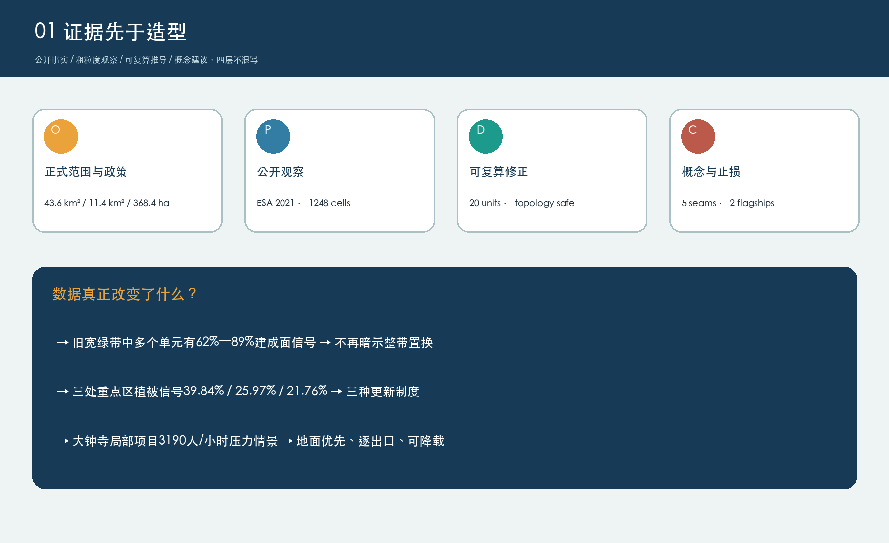
总体设计压缩成一句可执行判断：以保留为始、以缝合为形、以具名人工负责的AI为制度。 这使创新不再等于新建筑，连续不再等于宽绿带，智能不再等于自动审批。指标
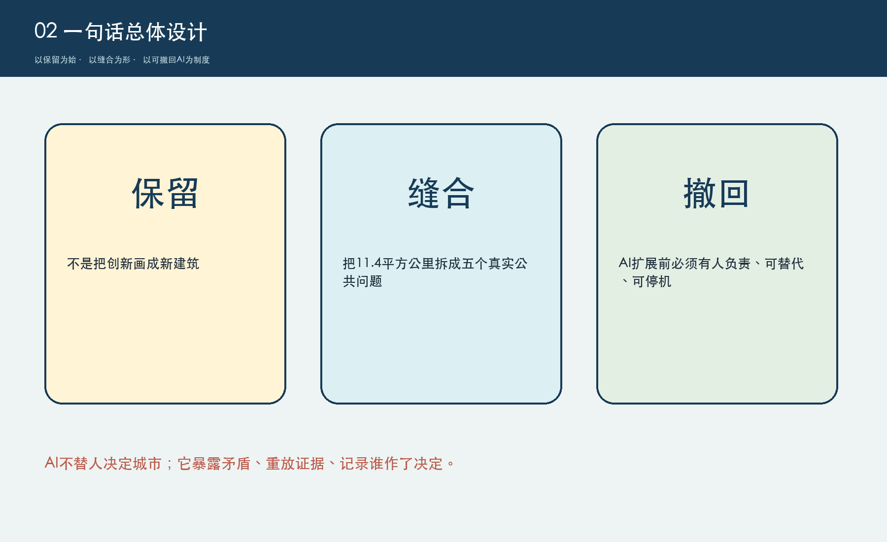
统筹研究范围产业与未来城市研究
对309个已合并方案的公开目录复核显示，276个方案仍围绕“线/带/脉/轴”组织叙事，200个强调开源、审计或回退；只有13个在摘要中触及建筑型公共原型，5个明确回应厕所、饮水、座椅、夜间或停车等日常设施，3个突出遮阴、风雨或微气候。这不是质量排名，但说明“完整公共空间原型”是有证据的差异化缺口。来源 指标
五个国际案例只转译机制：AI Singapore的真实问题到PoC、Helsinki的城市试验场、Mila的研究共同体、Amsterdam的公共记录、Seoul AI Hub的人才支持。海淀的转译不是复制科技园形象，而是把技术测试、公共服务、人工责任和长期运营放入同一空间。来源 来源 来源
产业生态不以未经核实的企业名单或产值承诺组织，而以八类可审阅要素形成学习回路：真实问题、基础研究、算力与数据责任、原型验证、专业与公共服务、人才生活、标准治理、公开学习回执。众智园、原点社区、大钟寺和两翼在不同环节承担责任，避免把‘产业协同’停留在箭头和口号。指标 空间数据
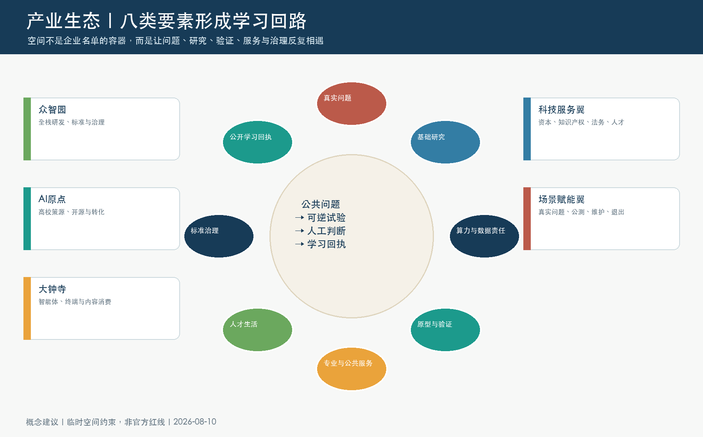
海淀十五五明确提出北京AI原点社区、中关村AI北纬社区和百年京张AI创新带‘两区一带’，并要求京张联动南北、连接知识创新、技术创新和产业培育。方案据此把南部原点定义为0—1策源接口，把京张定义为1—10真实城市中试与公共价值验证，把北部与外部园区定义为10—100产业协同网络；这不是把生产线塞进遗址公园，而是为空间、服务、标准和责任建立连续交接。来源 指标
总体设计范围城市更新与控规深度城市设计
总体结构从“一条主轴”调整为“纵向遗产绿脊 + 横向校城河站链接 + 三座公共地标”。既有建筑与首层界面优先适应性使用，可逆构件先行；容积率、高度、道路红线、桥隧和市政容量全部待正式资料和专项论证，不把概念图伪装成控规或工程图。标准 深度
三座地标都拒绝巨构：北端清河基准花园公开绿色AI与生态养护的聚合结果；中段清华园共享檐承接校城共享；南端大钟寺四角客厅成为站城到达和智能经济的公共门厅。指标 深度
本方案不再用四条贯穿全长的色带代替总体规划，而把同一临时边界切分为20个拓扑连续的概念规划单元。五个南北片段表达城市角色，四类东西程序表达研发转化、遗产绿脊、智能服务和人才生活；单元完整覆盖临时范围但不对应宗地、权属和法定用地。十个更新工作包进一步把总体结构转成可讨论的项目组合。指标 空间数据 深度
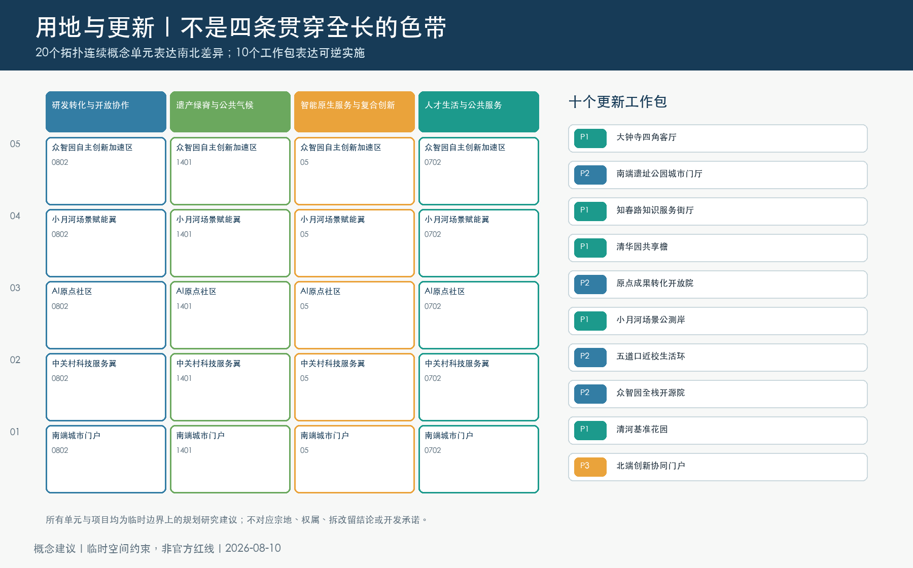
方案的核心概念不是单一造型，而是‘公共基础设施协议’：用公共气候网络组织空间，用可逆更新模式组织实施，用证据—人工决定—学习回执机制组织AI，用三种差异化创新社区组织产业。四者共同构成可被替换数据、专业团队和公众反馈持续修正的开放规划体系。
公开信号审计显示，旧版五个‘遗产绿脊’单元中多个单元仍以建成面为主；若继续保留整齐宽带，会把概念图误读成大规模置换。本轮保留各片段植被/水体混合信号簇，将连续性转移到更窄、可逆、需现场核实的公共气候缝；其余建成区域仍分为研发开放、复合服务和人才公共三类更新界面。20个单元保持完整覆盖、无显著正面积重叠，但依旧不是宗地或法定用地。空间数据
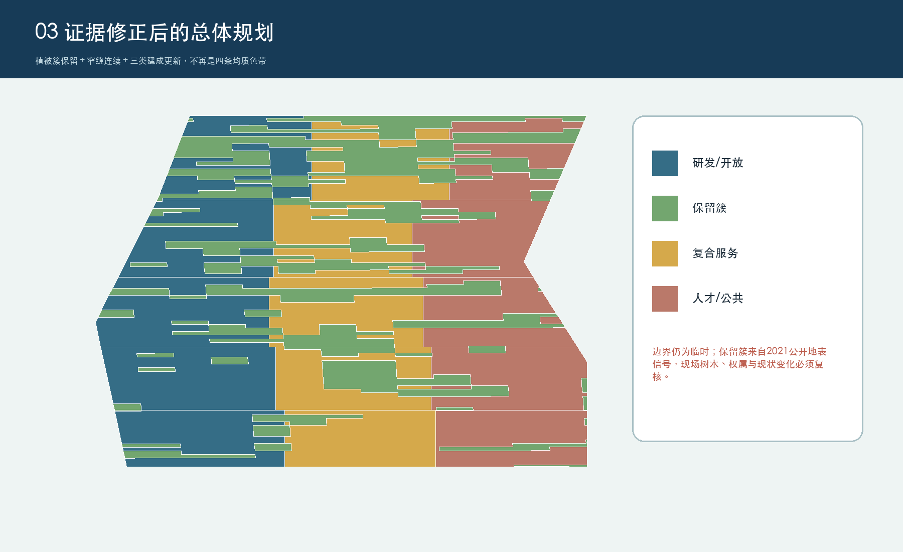
五条缝分别回应站城到达、三环等候、知春遗产日常、清华园共享学习和清河北端生态，不再共享一套解法。每条缝只有‘问题—最小公共工程—专业门—止损’四个必答项；桥隧、道路等级、信号和轨道工程均不由Agent定案。指标 空间数据
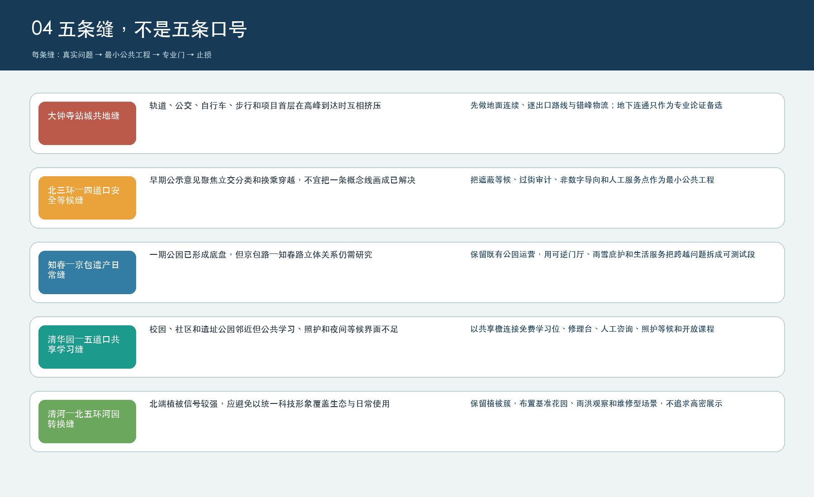
重点区域详细设计
众智园以“清河基准花园”组织绿色AI全栈测试、标准讨论、公众观察和生态养护，但不公开商业秘密或个人数据。AI原点社区以“清华园共享檐”把安静学习、开放课程、维修共餐、儿童照护、人工服务和雨天候行放进与遗产脱离的可逆结构。大钟寺以“四角客厅”先解决四象限地面联系、无障碍换乘、自行车停放和夜间有人服务，再讨论更重的站城工程。空间数据 深度
两项旗舰公共设计都完整记录问题、空间动作、全天运营、Agent责任、离线替代和专业深化触发条件；它们是参考方案，不构成地块、道路或投资结论。指标 空间数据

共享檐被深化为与遗产脱离的线性市民客厅：六个无墙房间以安静学习、开放课程、修理共餐、人工帮助、照护停留和雨天候行为序；概念1:500级平面、1:200级纵剖和1:50级单跨节点把遗产脱离、树冠、干行带、雨水边和可隔离维护同时画出。尺度只表达专业深化方向，不是基于正式测绘的施工图或已校核的工程尺寸。来源 深度

四角客厅被深化为随时间切换的地面公共建筑。四个角分别承担到达、照护、交换和夜间生活；早高峰、日间、晚高峰和夜间使用不同的路缘与人工责任。所有桥隧、信号与排水绩效仍待专项，第一阶段即使没有重工程也必须产生公共价值。来源 指标

三处重点区不再只靠一座地标区分。众智园形成‘花园型创新街区’，以全栈开源院、清河基准花园和北端协同门户连接研发、标准与生态治理；AI原点社区形成‘近校型创新街区’，以开放转化院、共享檐和近校生活环连接策源、转化与日常生活；大钟寺形成‘城市型创新街区’，以四角客厅、南端公园门厅和站城服务界面连接智能原生业态、国际交往和公共到达。每区都有不同资料门和专业风险，不套用同一个园区模板。指标 空间数据 深度
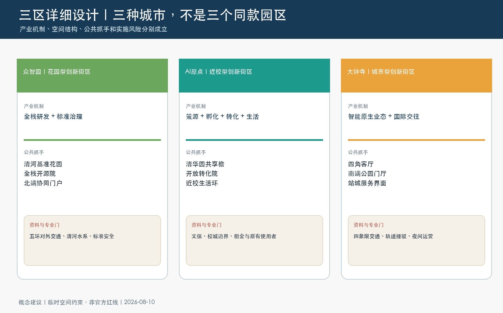
三处重点区的2021公开地表信号差异达到18.08个百分点，因此形成三种制度：众智园以林下开源生产和基准花园为先；AI原点以存量首层、院落渗透和共享檐为先；大钟寺以多模式到达公共地面、错峰物流和人工值守为先。它们共享公共价值协议，不共享一张科技园风格皮肤。指标 空间数据
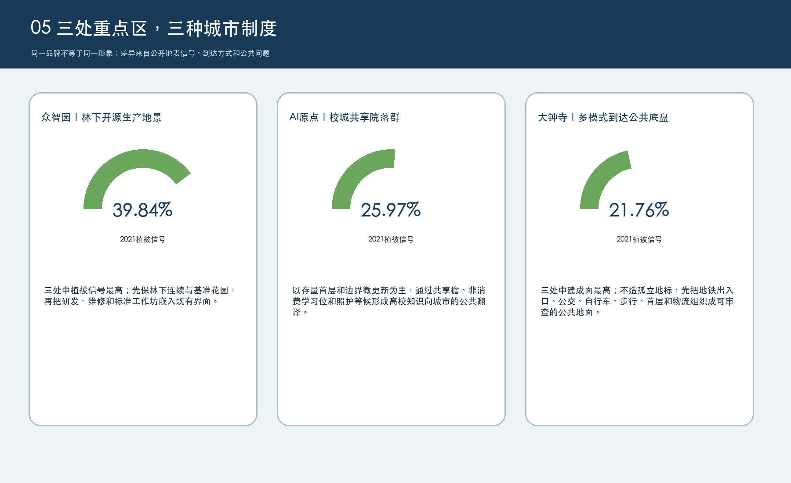
两项拳头设计的完整度不靠夸张造型，而靠平面、剖面、天气、时间和运营互相锁定。共享檐的六跨只是一种可按跨隔离、维护和拆除的公共构件语法；四角客厅则以站点一体化审查框架下的地面公共协议组织四种时段。大钟寺报告的3190人/小时只代表5.03公顷蓝景项目预测高峰，被严格限制为局部压力情景；排队侵占净行带或人工接管超时就降载。来源 空间数据
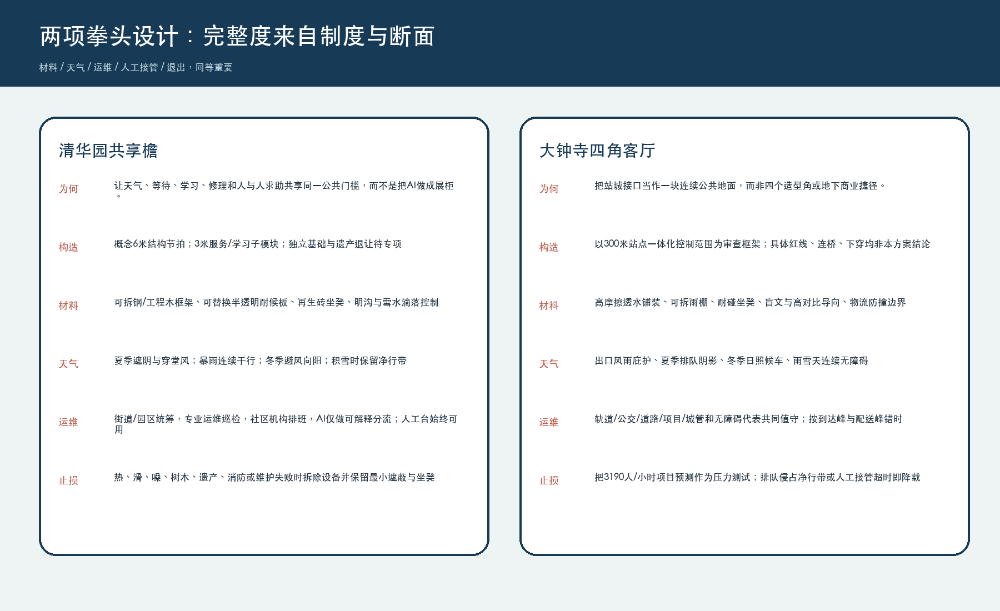
AI 创新生态、人才画像与 AI+ 场景
六类画像是研发人员、青年创业者和国际人才、周边老年居民、儿童与照护者、轮椅与视障使用者、公共服务与维护人员。画像只表达服务摩擦，不用于个体识别或商业定向。指标 来源
十个场景包括三项产业测试——绿色AI全栈能效对照、端侧设备互操作、低速机器人受控共行——以及共享檐服务分流、多语知识共译、老年人非数字服务陪伴、遮阴与等候舒适提示、四象限分时路缘协商、京张史料证据导览、公共设施维护闭环。每项必须填写“公共问题、最小数据、人工责任人、离线替代、暂停阈值、学习回执”六字段后方可进入试点讨论。指标 指标
“共檐服务员”是V6.1唯一被画成空间服务接口的Agent：输入只限公开天气、聚合人工观察和维护报告；输出只是一条服务状态建议，例如开启雨天等候、调整临时座椅、提示绕行或召唤人工帮助。具名值守者可以接受、修改或拒绝，纸质时段表、静态双语导向和人工台始终等价可用。它拒绝人脸识别、个体画像、信号控制、轨道控制和自动审批；当无障碍、免费停留、树木/遗产保护、维护能力或人工值守任一失败时，试点必须缩小或退出。来源 空间数据
V6.1将这条边界写成CWS-01离线状态协议，而不是一项模型能力承诺：18个确定性夹具全部通过，其中10个故意设置个人数据、越权控制、无人值守或公共条件失败，必须HOLD或REFUSE；18个输出均要求具名人工决定且自动行动为0。该结果只证明声明的规则没有自相矛盾，不证明现场效果、公众同意、安全认证或运营授权。来源 指标 指标
共檐服务员之外，AGENT-GOV-01把公共空间AI的准入、申诉与退出写为可审查的状态机：个人识别或轨迹、道路或轨道控制，以及没有具名接管人与线下替代的自动服务，都在三项离线治理夹具中被规定为拒绝。三项治理夹具和18项CWS夹具都只是规则审计，不是部署证据。空间数据
Agent不是一只包办城市的“总管”，而是十个有边界的协作岗位。空间Agent只读脱敏后的设施状态和人工报修，给维护人员排出建议次序；服务Agent只做多语问答、现场分流和预约辅助，无法拒绝线下服务；交通Agent只形成冲突预警与分时建议，最终决定始终由现场人员和主管部门作出。每个试点公开一张学习回执：问题是否缓解、谁受益、谁可能被遗漏、发生过什么失败、下一轮继续还是退出。这样，AI创新从“用了什么模型”转为“能否让公共问题被持续发现、共同判断并可逆地改进”。
“京张反方设计室”由无障碍与照护、北京气候、遗产与场所、运营与维护、公共利益红队五类Agent组成；它们不冒充市民，也不批准方案，而是读取清权证据，对两项旗舰提出反对意见，记录设计响应和人工裁决。十二项任务包含三个故意错误样本：遮雨却阻断轮椅、商业座位替代免费停留、Agent越权改变真实信号，系统必须明确拒绝。来源 指标 指标
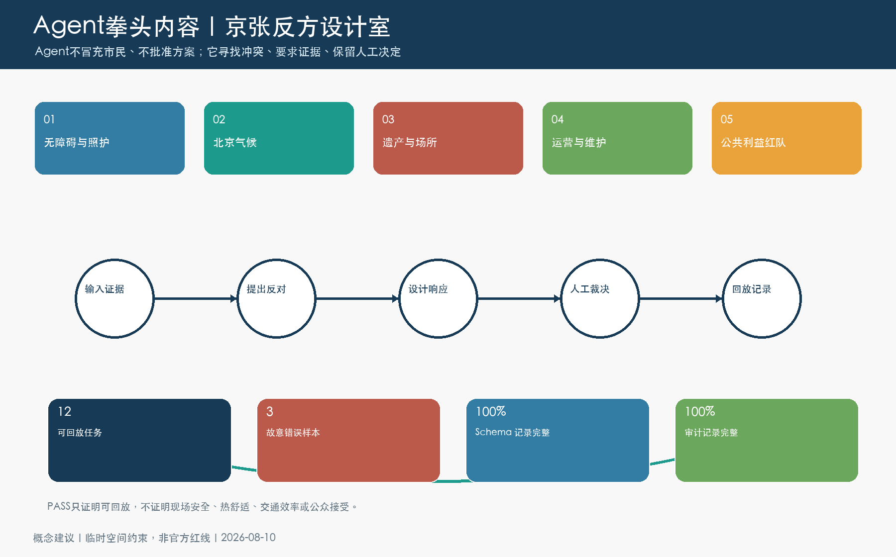
海淀2025年常住人口311.1万，常住外来人口占33%；2020年七普中60岁及以上占18.5%。这些区级数字说明高流动创新人口与老龄化、少子化问题同时存在，但不能直接推出项目范围居民比例。因此本方案不制造‘典型海淀人’，而提出八类待验证流动：沿线居民、老幼照护、高校师生、AI研发创业、OPC小团队、公共服务维护、跨区通勤和国际文化访客，并为每类人明确到达方式、要完成的任务和服务失败点。来源 来源 指标
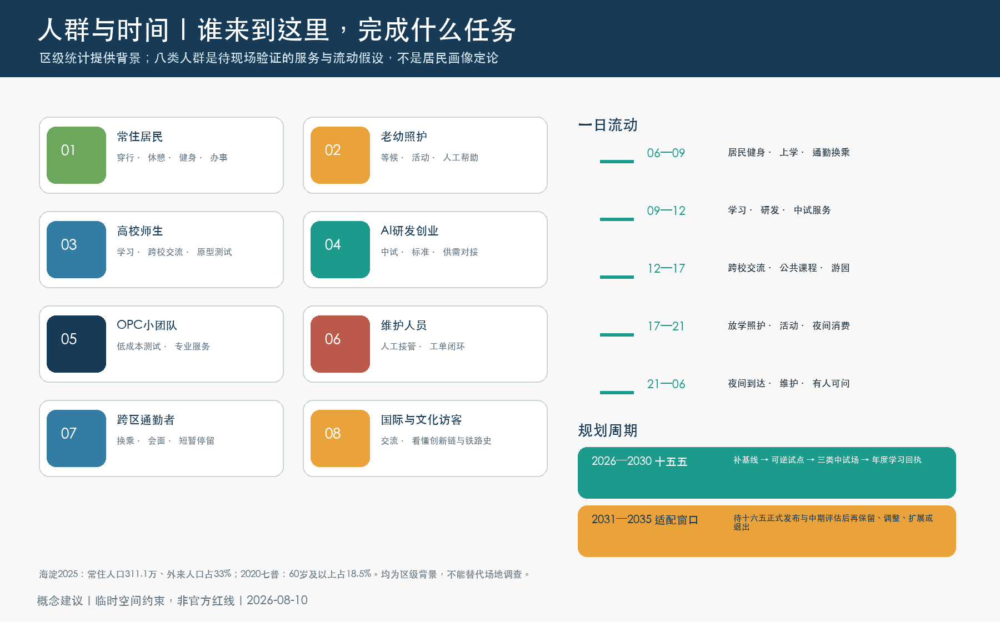
Agent特色不是生成更多概念，而是把反方设计室做成可重放协议：3个公开提示模板、4条简明trace、输入哈希、工具版本、失败测试和4项人工决定被保存为离线资产；不保存也不声称隐藏思维链，不声称LLM文本确定性。Agent可以指出证据越界和设计矛盾，但扩展、许可、暂停与退出必须由具名人或机构记录。指标 指标
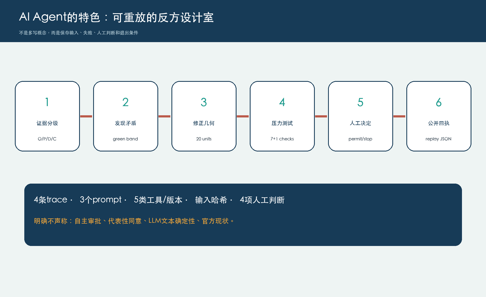
用地、建筑规模与拆改留方案
概念用地仍以完整、无重叠的研究、绿地、服务和社区分区支撑复算，但方案的设计重心转向公共首层与开放边界。建筑判断遵循“先使用、再适配、后建设”：先调查现有服务与使用者，再评估结构、消防、文保、碳排、租金和迁移影响；没有证据不做逐栋拆改留结论。空间数据 深度
清华园共享檐必须与遗产本体脱离、自支撑、可逆；大钟寺四角客厅优先使用地面和既有首层，任何桥、隧、地下空间或永久构筑物都留给专业专项论证。标准 深度
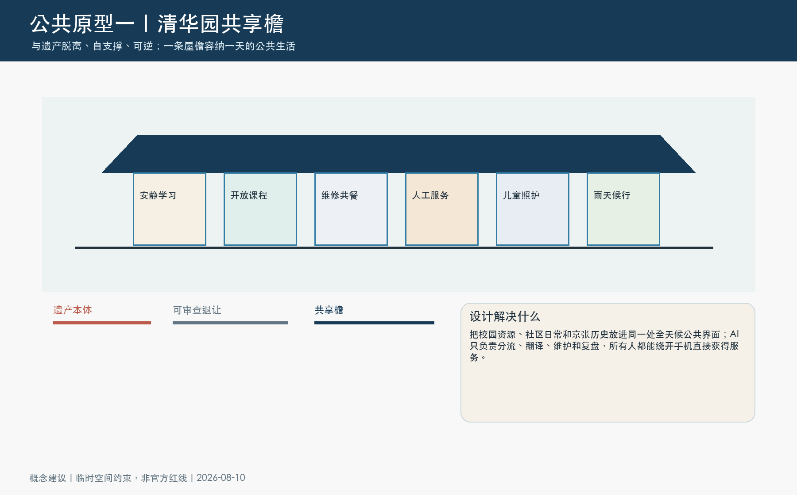
交通、轨道、市政与公共服务设施
交通优先序是步行与轮椅、自行车、公共交通、服务交通、私人穿行。大钟寺“四角客厅”提出地面优先的软X联系和四个开放角厅，通过时段分配减少过街、停车、接送、配送和活动之间的冲突；它不自动改变交通信号，也不宣称工程可行。空间数据 深度
市政与AI设施必须留下人工接管、离线流程、维护责任和故障恢复。公共服务不得变成“只扫码才能用”，厕所、饮水、座椅、遮雨、自行车停放和人工服务是最低包。深度 来源
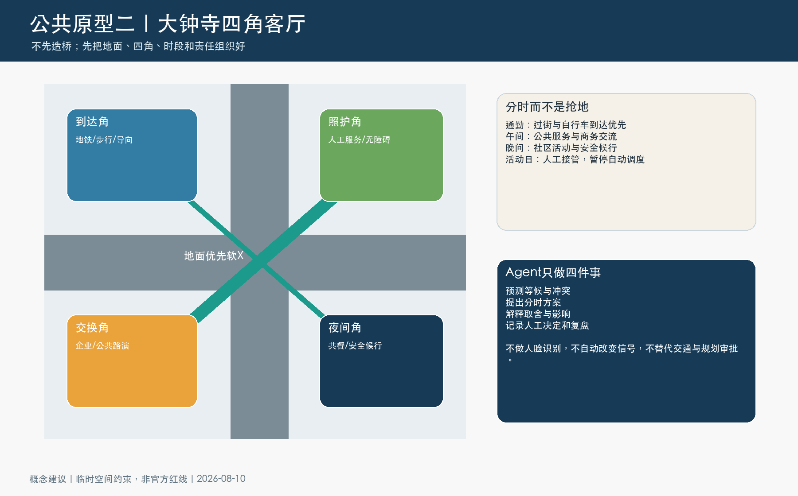
十二条市民旅程把设计从“有设施”推进到“能完成一件事”：共享檐检验冬日不用手机、雨天轮椅、儿童照护、断网访客和单湾维护；四角客厅检验高峰换乘、自行车冲突、免费停留、夜间到达、活动日离线和暴雨客流。旅程是Agent检查输入，不是民意调查。来源 指标
市民旅程不能代替公众协商。零阶段应以分层招募、知情同意、匿名最小记录、可撤回与线下渠道组织居民、沿线单位、维护人员和非数字使用者；结果只用于校正问题与服务，不构成项目认可或单一群体否决。空间数据
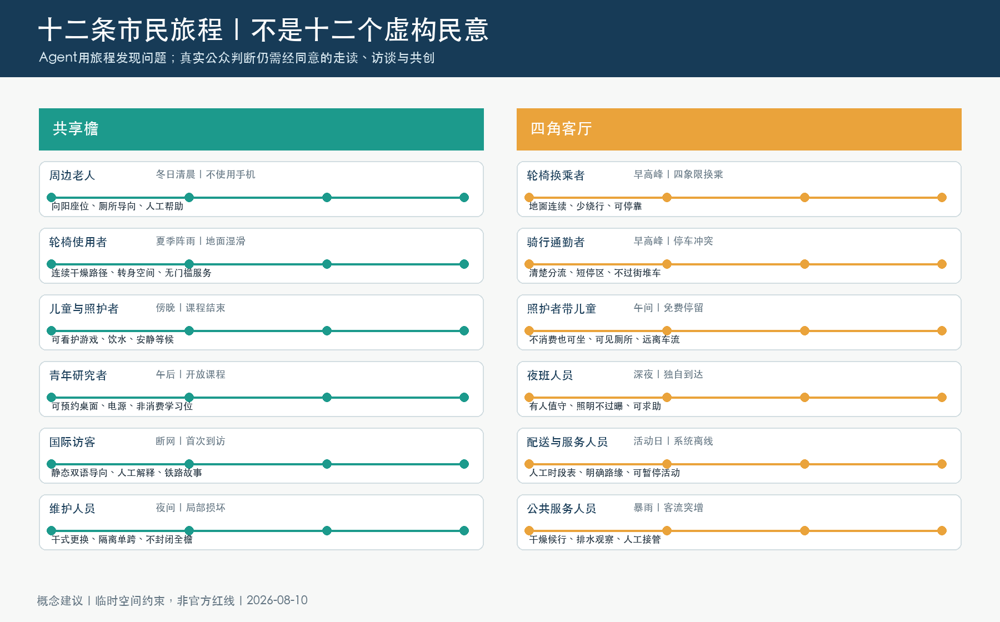
本方案把交通、蓝绿、市政和公共服务视为四张共用责任链的网络。纵向步行轮椅主脊与骑行伴行线承担南北连续；五条横向城市缝承担校—园—河—站联系；西侧高校与专业服务接驳链、东侧社区与轨道接驳链组织公共交通转换。水、能、端侧算力和设备维护不被画成未经核实的工程线，而进入每个更新工作包的资料门与人工接管清单。指标 空间数据 深度
五条缝在逐路段、逐入口、逐15分钟的真实路线审计之前，只能称为待验证的概念联系；若净行带、照明、等候或绕行不合格，必须停下重测，而不能把图线延伸为连续无障碍的结论。空间数据
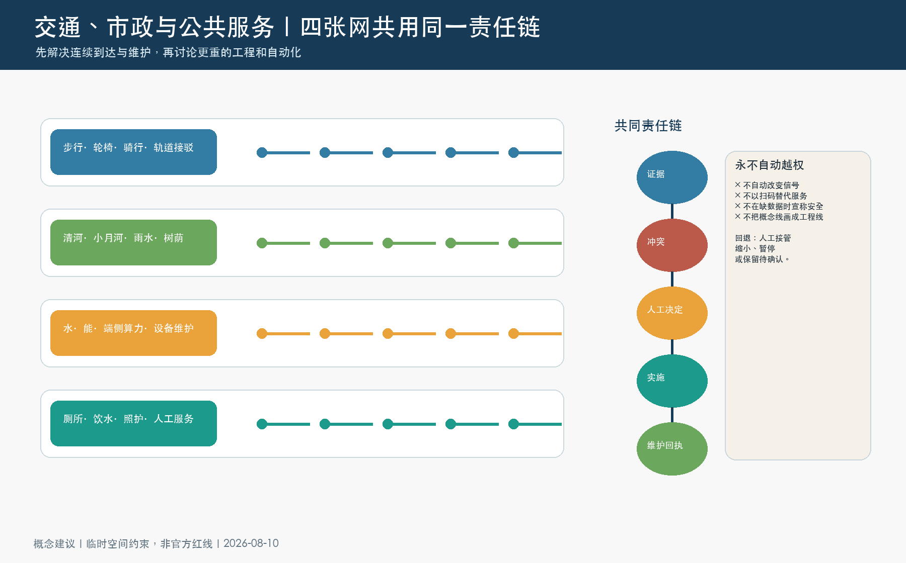
蓝绿空间、公共空间与城市风貌
海淀的风格不是一套材料表，而是一种取舍：绿地先服务日常，科技先解决摩擦，文化进入长期使用。方案用铁路基础设施的节制、耐久和可维护性作为形态语言，避免赛博霓虹、巨屏和网红装置；新增构件以暖灰、深蓝、清河绿和少量信号金组织，夜景克制并保留暗环境。来源 深度
蓝绿策略由纵向遗产绿脊和横向校城河站连接共同构成。概念图层中的绿地与公共空间分别复算，不把雨水花园、树阵或可渗透铺装虚报成法定绿地；正式阶段还需补树木普查、积水点、海绵指标、日照风环境、生境和地下管线。共享檐优先利用既有树荫和可逆遮蔽，四角客厅以连续无障碍地面、排水坡向、照明暗区控制和雨天候行组成最低服务包。空间数据 空间数据
树木—雨洪—无障碍底图须在地籍、现状和权属明确后联合核验；WorldCover或论文不能证明具体树木、排水或通行状况，发现矛盾即收回相应推断并调整策略。空间数据
AI最好“无感”：用户首先感到少淋雨、少绕路、有人可问、能坐下来，之后才知道后台Agent在做分流、翻译、维护与复盘。微气候提示只使用聚合环境数据，不能替代现场树木、排水和结构设计；若技术停止，座椅、雨棚、饮水、厕所导向和人工服务仍然可用。

共享檐从一张屋顶转向四季公共气候：冬季借太阳形成向阳湾，春雨由屋面导向外侧雨园，夏季优先借既有树冠，秋季用可开合桌面承接开放课堂。真实热舒适、风雪荷载、树根和排水能力仍需专业模型与现场数据，当前不报告绩效数值。来源 指标
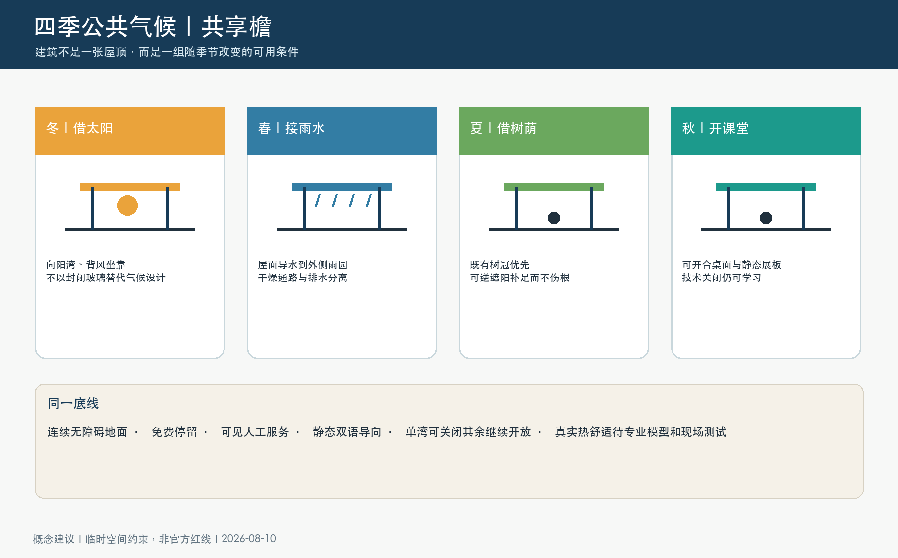
‘共檐’的文化识别来自三种长期行为而不是科技皮肤：京张铁路的移动与时间、中关村的试验与开放、AI新文化的解释责任与可退出。线性符号表达铁路时间和横向城市缝，屋檐面表达免费停留，节点表达人工服务和贡献荣誉；配色使用深蓝、清河绿与少量信号金，明确拒绝企业Logo拼贴、赛博霓虹和把历史当装饰。来源 深度

更新项目清单、实施政策与分期计划
六个概念工作包为：公共屋檐最低包、清河基准花园、清华园共享檐、大钟寺四角客厅、横向校城河站链接、Agent服务契约。阶段0补齐边界、客流、无障碍、文保、权属和维护基线；阶段1用可逆家具、导视和有人服务验证需求；阶段2深化两项旗舰原型；阶段3只扩展被证明有公共价值的组件。空间数据 深度
年度运营不是一次节庆，而是“春季公共问题征集—夏季小规模原型—秋季公开评审—冬季维护复盘”。每项试点都有继续、修改、暂停或退出四种结果。来源 深度
每项旗舰使用相同的四道门：资料门补齐边界、测绘、权属、文保、交通、树木、排水与使用基线；可逆试点门只做家具、导向、人工服务和临时遮蔽；专业深化门进入建筑、结构、消防、交通、市政、景观、无障碍与文保专项；扩展门只复制被证明有公共价值且可维护的组件。投资与年度运营成本在选址、服务目录和主体未明确前保持未知。指标 深度
十个更新工作包均经过四道门：资料门确认边界、权属、文保、测绘、客流、树木和管线；可逆试点只允许家具、导向、人工服务和临时遮蔽；专业深化进入规划、建筑、交通、市政、景观、无障碍与运营；公共价值复核询问谁受益、谁被遗漏、谁维护以及是否退出。P1/P2/P3仅表达研究优先级，不构成投资或开发时序承诺。空间数据 指标 深度
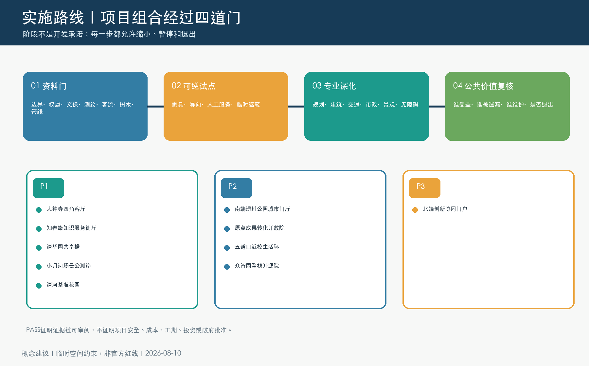
参与主体按决策权分层：政府与主管部门确认法定边界和公共责任，专业团队完成规划、建筑、交通、市政、文保与无障碍深化，高校和企业提出真实研发与场景需求，社区、居民和一线维护者参与走读与复核，Agent只整理证据和暴露冲突。每阶段使用同一组评估指标：公共服务是否无需手机、无障碍旅程能否完成、免费停留是否保留、维护工单是否闭环、负样本是否被拦截；没有可信基线的满意度、成本和交通改善保持待确认。
2026—2030对应已正式发布的十五五实施窗口：先补人口、客流、气候、权属和运维基线，再运行清河基准花园、小月河公测岸、四角客厅三类中试场，深化共享檐与四角客厅，并逐年公开学习回执。2031—2035只设置‘2035适配窗口’：截至2026年8月尚无可用于本案的十六五正式文件，必须待十五五评估和国家、北京、海淀十六五发布后，才决定保留、调整、扩展或退出。来源 来源 指标
六项责任账本为每类工作记录牵头主体类型、专业许可门、相对成本带、运维、阶段和停止条件。S/M/L不是投资估算；尚未明确法定申请人、专业造价、运维预算和代表性公众授权时，不得把概念成熟度写成可开工。指标
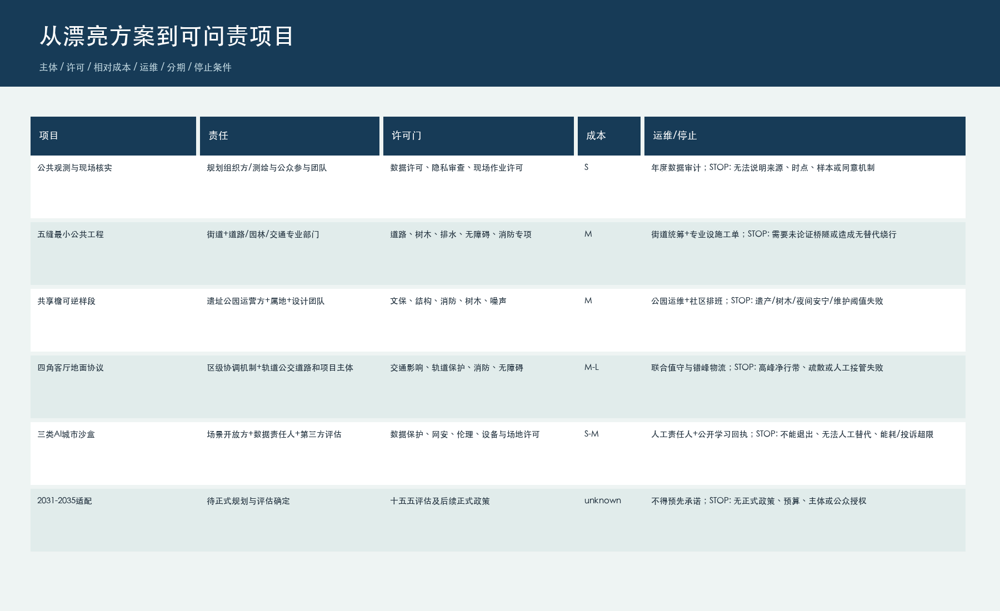
指标体系、面积复算与合规矩阵
官方intake、professional与visual校验已通过；仓库专业空间复核已在声明依赖的隔离环境中持久化为PASS，依赖无关脚本仅补充结构和明显拓扑错误审计，不能替代专业复核。临时总体面积、绿地、公共空间和建筑基底均可由GeoJSON复算，容积率、高度、退线和法定绿地率保持未知。官方边界替换时，九个图层、指标、图件、HTML和PDF同时重算。指标 深度
评委视角的自评重点不是“有没有填满任务”，而是两项公共设计是否在任务契合、原创性、AI规划创新、可实施性、包容性、风险合规和表达完整度上形成同一条证据链。来源 指标

反方设计室现有12项任务、3个负样本，任务记录的dispatch schema与审计字段完整率均为100%。这些是从simulation.json逐项复算的包内质量指标，只证明记录可回放；平均绕行改善、遮蔽覆盖、真实公众接受和运营成本仍为unknown。指标 指标 指标
共檐服务员测试台补充但不取代反方设计室：它公开输入、允许输出、禁止权限、人工接管和18条夹具的准确命令；任何现场试点仍须先经数据字典、隐私安全、无障碍、文保树木、消防排水、人员排班与经同意公众参与审查。指标 指标 空间数据
包内可复算指标包括20个规划单元、5条横向城市缝、10个更新工作包、12类建筑公共界面、9条概念交通联系和11个蓝绿组件。它们证明规划系统不是只存在于文字中；但由于总体边界、宗地、控规、现状建筑和工程底数仍缺，所有比例只用于概念比较，不形成法定规划结论。指标 指标 指标
本版复核六个既定目标：空间协同、居民日常、产业学习、文化气候、风险治理和北京—海淀区域职能均有空间或结构化证据。下一步不是继续堆概念，而是补现场人口、匿名客流、气候、设施和运维基线。指标 指标
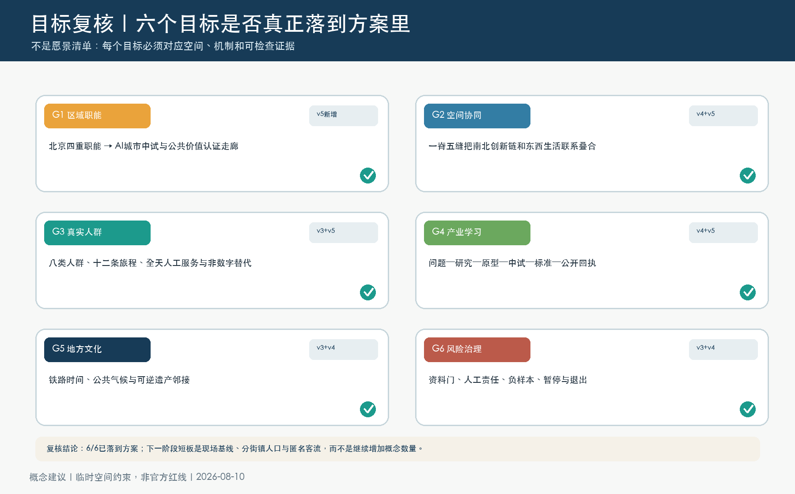
本版持续复核九个必需GeoJSON的结构、属性、边界匹配、覆盖、重叠和越界检查。仓库临时边界记录的既有EPSG:4548投影面积为11,412,825平方米；依赖无关近似复算为11,399,523平方米，两者相差约0.117%，都只用于核对公告约11.4平方公里。20个概念用地单元完整覆盖且无正面积重叠，所有设计要素已裁切在临时范围内。但空间包仍有67个Agent概念要素、0个公共观测要素，12个建筑多边形也只是界面类型，因此只能称为可复算概念骨架，不能称为现状GIS、法定控规或工程线位。指标 指标 空间数据
需特别区分：九个必需GeoJSON仍是设计包，因此其中公共观测要素仍为0；1248个P层观察单元因仓库单文件限制分成visual/assets/worldcover-grid-01.json至04.json，避免把观察与建议混入同一空间角色。这不是指标包装，而是证据链治理。指标 指标
风险、版权与合规说明
本方案是开放共创建议，不是获批规划。共享檐可能触及遗产、消防、权属与运营责任；四角客厅可能触及道路交通、轨道、消防和商业界面。任何真实落地都必须先完成专业专项、公众协商和法定程序。来源 深度
风险按“空间、运营、数据、算法、社会影响”五类进入闸门。空间闸门要求正式边界、权属、测绘、文保、消防、结构、交通和市政意见齐备；运营闸门要求明确值守、维修、保险、采购和长期资金；数据闸门执行最小收集、目的限定、保存期限和访问记录；算法闸门要求离线替代、人工接管、暂停阈值和错误申诉；社会影响闸门检查数字排斥、无障碍、儿童与老年人风险、租金及原有使用者迁移影响。任何一闸不通过，试点只能缩小、延期或退出。空间数据
图解、排版与空间数据由本地程序确定性生成；另有五张明确标注的AI概念氛围图，只表达人的使用体验，不是现场照片、工程落位或尺寸证据。包内不嵌入第三方照片、地图、商标或肖像。公开案例和海淀政策仅以链接文字作为方法依据；相邻参赛方案只用于主题差异化统计，不复制其文本、图件或机制。309项目录统计只说明关键词分布，不代表评委意见、质量排序或未来稳定总量。公开展示许可、署名方式、来源允许用途和禁止推断均在sources.json与版权声明中记录。
参考资料
资料分为五层。第一层是征集公告、Agent任务书、评审标准和仓库临时边界，用于确认三层范围、必交结构、证据契约和不可越过的正式资料缺口；第二层是已获批街区控规的公开新闻和海淀十五五，用于识别区域协同但绝不替换边界。来源
第三层是海淀分区规划、园林绿化专项规划和城市更新实施指引，用于提炼减量集约、公园里的科学城、无界首层、校城共享和人机友好的地方取向。来源 来源 来源
第四层是清华东路学院路会客厅、中关村大街公共空间和AI+养老政策资料，用于验证横向连接、全龄服务及非数字替代的真实问题；第五层是国际案例和公开投稿目录，只用于机制转译与差异化统计。来源
每条来源在sources.json中记录发布机构、URL、允许用途和禁止推断。政策文字不能替代现场调查，公开项目不能证明本方案具体落位可行，国际案例不能直接套用治理制度，参赛目录不能用来评价他人优劣。正式边界、控规、文保范围、建筑测绘、客流、管线、树木、权属、人口和运营成本仍是待补资料；取得后应重新运行空间复算、合规矩阵、风险闸门并更新所有图件与PDF。来源 来源